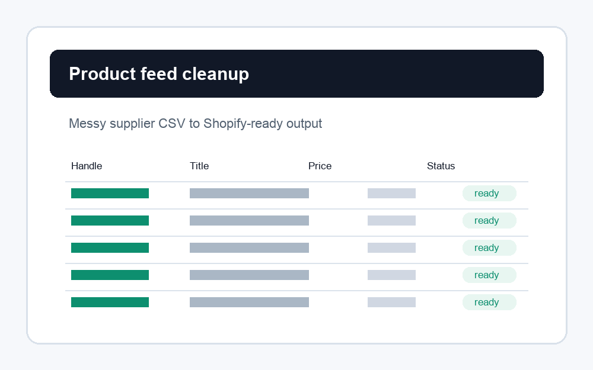
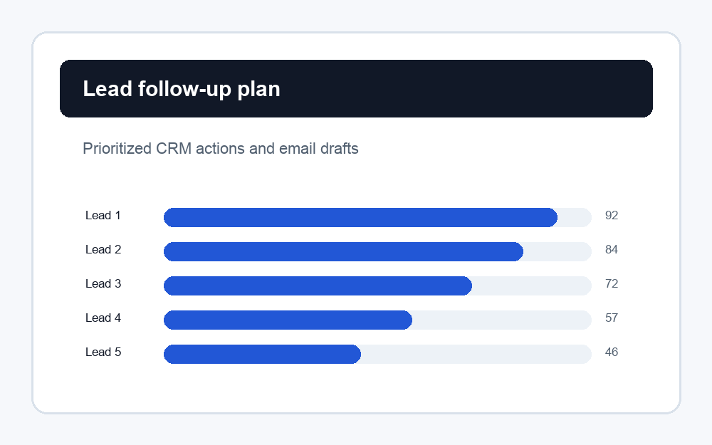
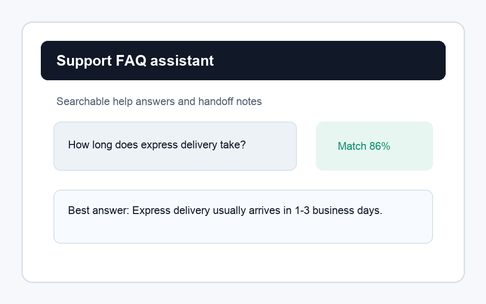

Ecommerce data
Shopify Product Feed Cleaner
Turns messy supplier product spreadsheets into a cleaner Shopify-ready CSV with categories, tags, SEO fields, and manual review notes.
Open case studyChina-based · Async-first · Written requirements preferred
I help overseas founders and service agencies with practical implementation work: product data cleanup, CRM follow-up workflows, internal scripts, and lightweight AI-assisted support prototypes.
Sample work

Ecommerce data
Turns messy supplier product spreadsheets into a cleaner Shopify-ready CSV with categories, tags, SEO fields, and manual review notes.
Open case study
CRM workflow
Scores leads, identifies stale opportunities, recommends next actions, and generates first-draft follow-up emails for a small sales team.
Open case study
Support prototype
A no-backend FAQ assistant prototype that searches a small knowledge base and suggests support handoff notes.
Open live demoServices
CSV/Excel cleanup, deduplication, field normalization, dashboards, and recurring reports.
Product feed preparation, bulk edit workflows, supplier catalog cleanup, and import-ready files.
API scripts, Google Sheets workflows, webhook helpers, and internal tools for repetitive tasks.
FAQ assistants, lead triage helpers, prompt workflows, and lightweight proof-of-concepts.
How I work
Share the spreadsheet, workflow, website, API docs, or short task description.
I confirm scope, inputs, outputs, assumptions, and a fixed small test task.
I deliver the output with a short handoff note, runnable files, and next-step suggestions.
Contact
Send a small task, sample file, or workflow description. I can start with a paid test task before a larger project.